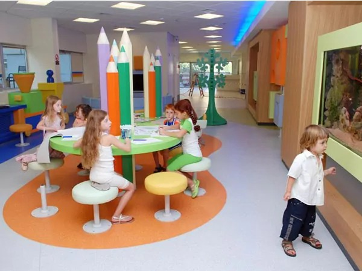
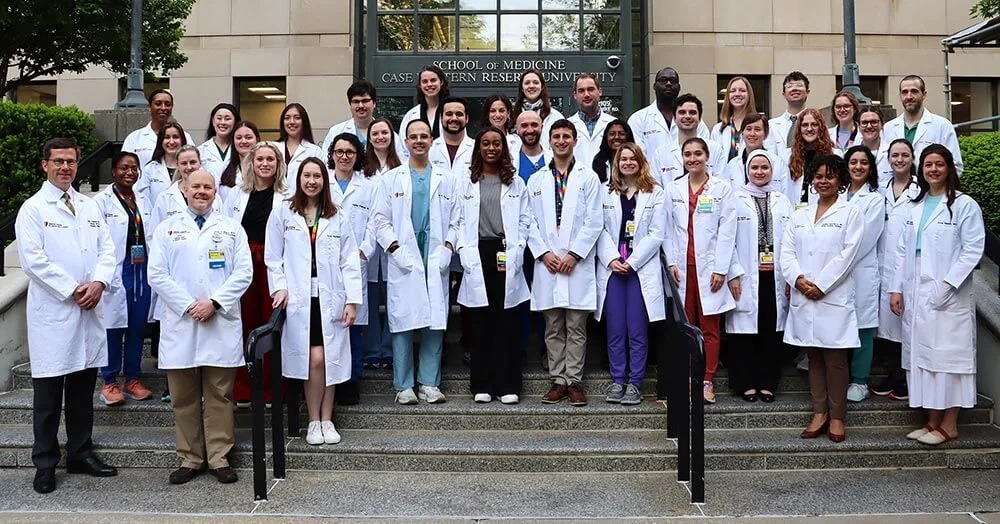
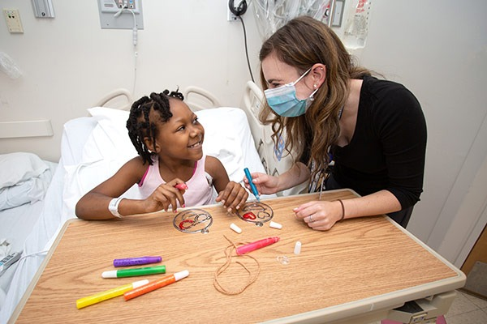
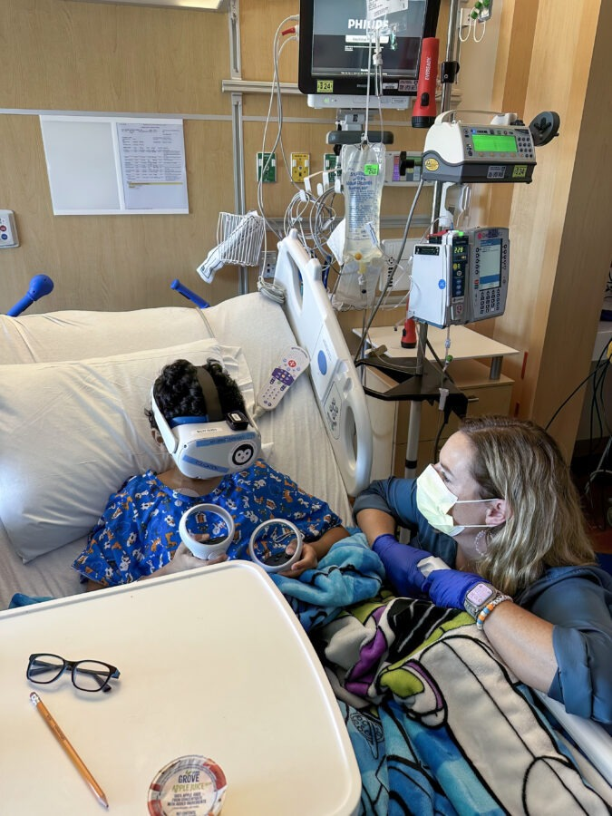
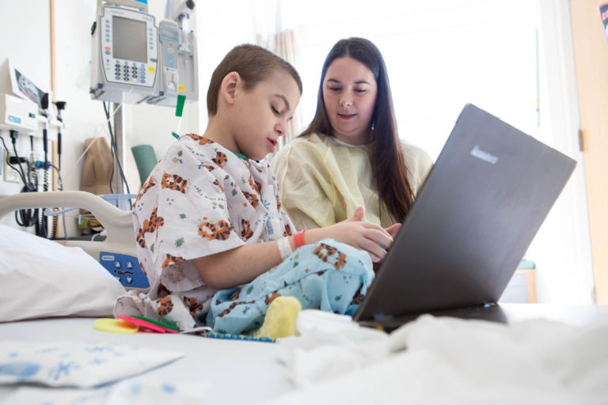
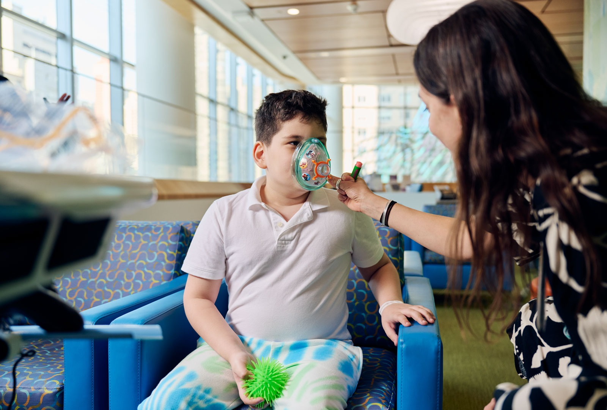

-
מהו בית ספר דנה?
בית ספר דנה הוא מסגרת חינוכית הפועלת בתוך בית החולים דנה דואק, ומאפשרת לילדים המאושפזים להמשיך בלמידה גם במהלך תקופת האשפוז.
-

מטרותיו של בית הספר
המטרה המרכזית היא שמירה על רצף לימודי, מתן תמיכה רגשית ויצירת חוויה לימודית חיובית לילדים בזמן האשפוז.
-

צוות ההוראה והתפקיד שלו
הצוות כולל מורים, גננות ואנשי חינוך המותאמים לעבודה עם ילדים במצבי אשפוז ופועלים בשיתוף עם הצוות הרפואי.
-

תחומי הלימוד והפעילויות
בבית הספר מתקיימים לימודי עברית, מתמטיקה ואנגלית, לצד פעילויות יצירה, מחשבים ומשחק.
-

התאמת הלמידה למצבו הרפואי של הילד
הלמידה מותאמת למצבו הרפואי של כל ילד ויכולה להתקיים בכיתה, ליד מיטת האשפוז או באופן פרטני.
-

הקשר עם בתי הספר בקהילה
צוות בית ספר דנה מקיים קשר עם בתי הספר בקהילה, מעדכן בתכני הלימוד ומתאם את חזרת הילד למסגרת הרגילה.
-

חשיבות בית ספר דנה לילדים ולמשפחות
בית הספר מעניק לילדים ולמשפחות תחושת שגרה, ביטחון ותקווה, ומאפשר לילדים להרגיש שהם ממשיכים להתקדם למרות האשפוז.
סיכום
ניתן להגיש רק לאחר מענה על כל השאלות ולחיצה על "בדיקת תשובות".